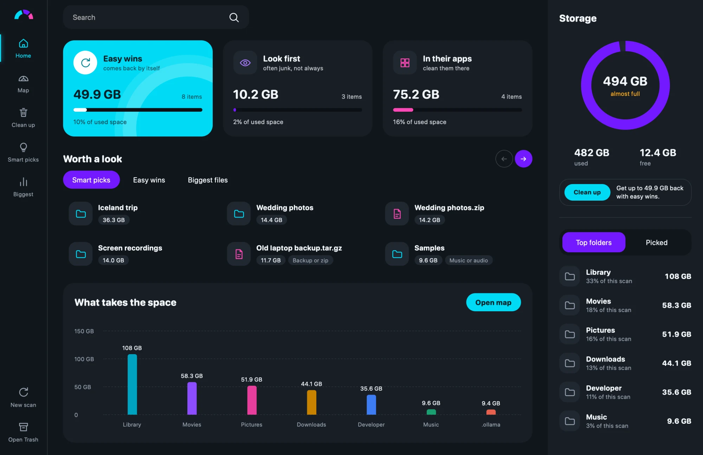

See what’s eating your Mac. Pick what goes. Clearout moves it to the Trash, and locks the stuff you’d cry about.
No account. No server. Needs macOS 15 or newer.
12.4 GB free
Click a piece to bin it.
Nothing real gets touched.
0 GB
in the Trash
See it work
Every screen here is Clearout’s real screen, with made-up files. Every AI guess came from Apple’s model. Click one to make it bigger.
Big mess. Small app.
Clearout waits in your menu bar with your free space. Open it when that number gets scary.

It’s your mess.
Nobody else needs to see it.
- Does it use the internet?
- No. It has no server, no account and no tracking. It can’t update itself, so get new versions here.
- What can it read?
- A scan reads names, sizes and dates. It doesn’t open your files. Before a move, it checks which apps have files open. For code, it asks Git, the code-saving tool on your Mac, if your work is saved.
- Why Full Disk Access?
- So it can see every folder. You can skip it, but then your Mac hides some folders and asks you more often.
- What does the AI see?
- Names only, on your Mac. It needs macOS 26 and Apple Intelligence. Everything else works without it.
- When do I get space back?
- When you empty the Trash. Sizes are close but not exact, because macOS can share space between copies.
- What about cloud files?
- Online-only files stay online. Cloud drive folders are skipped. Desktop and Documents are locked if iCloud syncs them.
Give your Mac some room.
- Click Download for Mac.
- Open Clearout.dmg from your Downloads, then drag Clearout into Applications.
- Open Clearout and switch on Full Disk Access when it asks.
Checked by Apple for malware. Needs macOS 15 or newer.